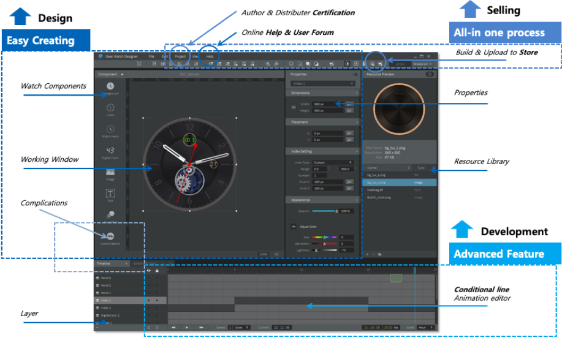
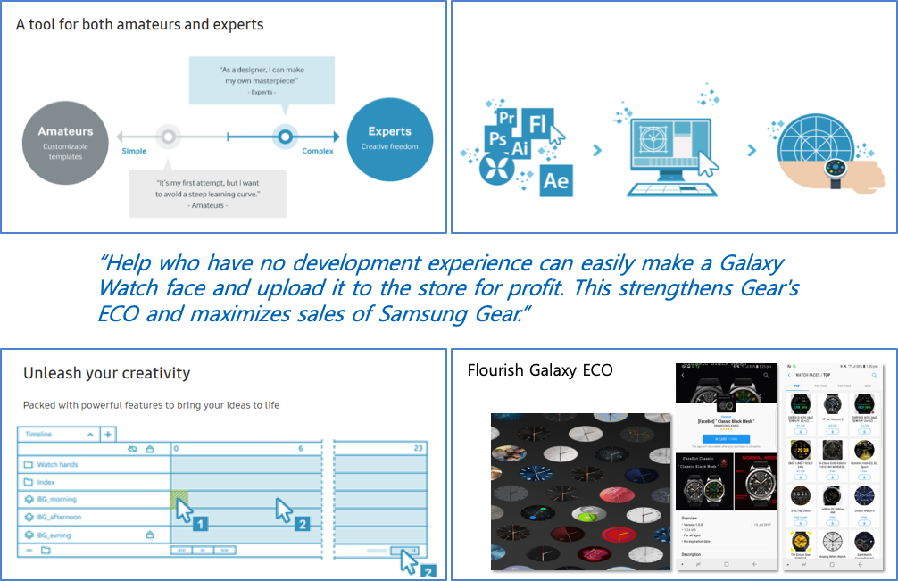
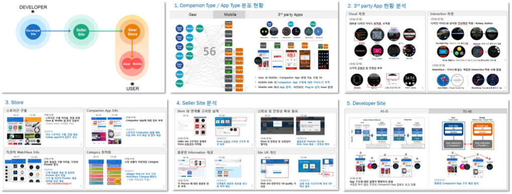
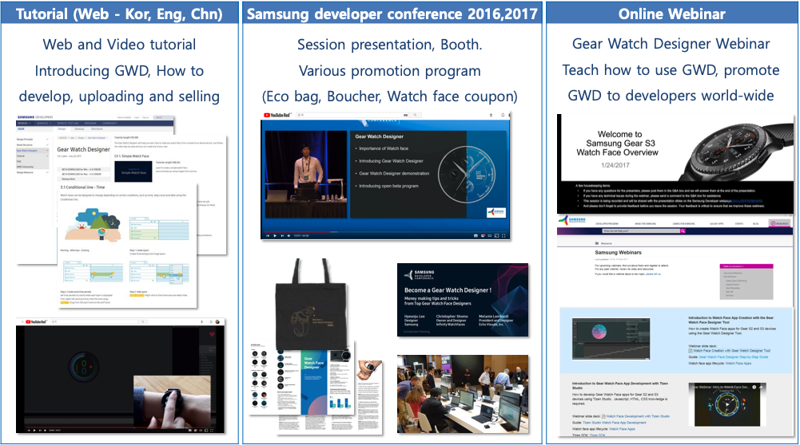
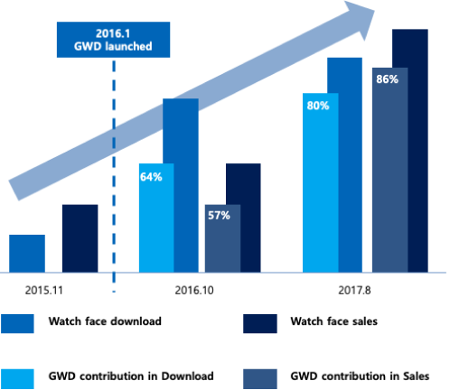

Project Overview

Apr.2015 ~ Dec.2015. Now open beta
(http://developer.samsung.com/gear/design/watch-designer)
PLATFORM: PC/MAC, Tizen, Wearable
Description
The Galaxy Watch Designer is a simple one-stop-shop for visual designers who are looking to produce and distribute their watch face designs.
It’s easy to incorporate info collected by Galaxy Mobile, like battery life and step count, into your design and you can make your designs move with a range of powerful animation features.
Role: Project leading, Planning, UX-UI, Research, Branding, CS, Promotion, Web design
Background - Why this project was started?
1. Design & Develop Process efficiency

2. Enhancing Galaxy ECO

3. For Designers

The designers were my target users who I mostly focused on. If their creative ideas and their aesthetic sense are well harmonized, I expected that there would be a lot of smart watch faces that are competitive in the market, and they would help to enrich the Samsung wearable ECO.
As a result of researching inside and outside designers, many designers want to participate in the development of this kind of app market, but because of a lack of development ability, they haven't been able to do so. Therefore, I implemented the Galaxy Watch Designer by applying designer-friend UX to enable designers to easily demonstrate their creativity 100%.
Project Goals
Objectives
The purposed of the Galaxy Watch Designer (GWD) project was as follows.
"Help people to create a Galaxy Watch face even if they don't have development experience, and help them to make a profit by releasing it on the store. Finally, based on enhanced ECO, Samsung wearable will also maximize its sales volume."
The UX strategy for achieving the above goals was as follows.
- A tool for both amateurs and experts
- Just one simple process
- No Experience Needed
- Unleash your creativity
Target Users - Designers

Designers were my primary target users because they know how digital design works and how to create content. They always eager to participate in the app store business by themselves but they couldn't since they don't have enough skill to develop. For the designers, watch face was the most suitable type of application among all others, because
- Firstly, it doesn't ask high-level programming skill or tech understanding
- Secondly, consumer choice is made based on the idea and design capability.
- Last but not least, consumers purchase watch face most frequently compare to the other apps in the Galaxy wearable device.
So I set the Designers as my persona and tried to make them satisfied.
Research - Analysis Galaxy Wearable ECO system

Before designing the Galaxy Watch Designer, I needed to conduct detailed research on Galaxy wearable ECO. I wanted to understand the pain points and needs of developers and solve them with GWD. Thus, I researched more by directly experiencing the Design-Develop-Distribute process, which is the 3rd party developer's app development process.
As a result, I found the problems of Tizen ECO - Tizen's difficult and unnecessary process of applying certificate and verification process, difficulty in development due to lack of manual, and difficulty in uploading and selling, not enough support for selling.
Those findings were the issues I tried to solve.
Closed beta
GWD contest

GWD is a Creative Design Tool and it was difficult to verify usability as a general method. It was needed a process to find hidden errors according to various expressions and usage patterns during the actual designer’s use. So I held a GWD design contest for our visual designers and could get beneficial feedbacks and error. And there also many hidden side effects would never found unless having the contest.
Field User test - CCA workshop

A month before GWD officially release, I visited the CCA in the US to conduct a program workshop for students to verify usability through more users and to promote the program. I was surprised that the students were able to produce high quality works in a short time with this very initial version, and I was able to gain confidence in the public openings from that point.
Work process
UX Design

In GWD UX designing, the most important proposition was "Designer friendly." I have focused on letting them make Smart Watch faces easily with WYSIWYG method. I made it's possible to help them to easily find frequently used functions so that a simple watch face can be produced in 10 minutes. At the same time, I help to show off the designer’s creativity by providing various effects based on the conditional line, which extends the concept of animation and timeline. By using data and sensor information provided by Galaxy watch, it is possible to produce complication that provides information to the users. Also, I tried to arrange the functions of GWD according to the process of making the watch face so that helps the users to develop it seamlessly.

Based on the research result, I have designed not only tool UX for making watch face but also improving overall seller experiences. I automated the process of issuing certificates, which is the most difficult for designers and among the build process, a concept unfamiliar to designers. In addition, testing through emulator and device install can be done through GWD. GWD users can also upload to the seller site via the upload button on GWD. This process has enabled designers and developers to have the best experience in the Design-Develop-Distribute process and sales process, which has also had a positive impact on the buyer experience.
Tutorial & Promotion
As a PL for the GWD project, I also worked on more than UX design. Web, and video tutorials to make it easier for developers to access the information they need, and attended major events to promote GWD. I also conducted online webinar for GWD training and introducing.
Outcome
3rd party fandom

- Besides official community, 3rd party communities for creating watch face created.
- Also designers are started to sell the GWD watch faces to store, even established venture company.
- >> This helps to increase company brand value as developer friend company.
Galaxy Watch ECO
- Market volume in sales and Download are dramatically increased after GWD launched.
- GWD contribution in sales : 86% of total sales
- 90% of Watch faces in store are developed by GWD
Since the GWD was started in 2016, Galaxy wearable ECO has grown rapidly. The actual analysis shows that GWD contributes hugely to this increase, most of the apps on the store are watch faces and 80% of the watch faces are made by GWD. In addition, 80% of total watch face sales comes from watch face made by GWD.
Communities & Youtube
- myGalaxyWatch
- GWD FaceBook community
- GWD forum
- JIBBER JAB Review (Watch face Reviewer)
- GWD Session Presentation
- Thank your GWD (Video)
- GWD open seminar (Video)
Press
- Samsung Electronics News Room
- Tizen experts (1)
- Tizen experts (2)
- SAMMOBILE
- Mobilescout
- SCIENCE WORLD REPORT:
Galaxy Watch Designer
Create Watch face quick and easy